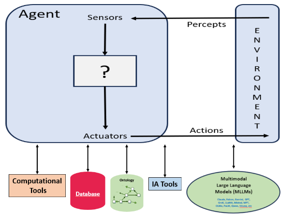
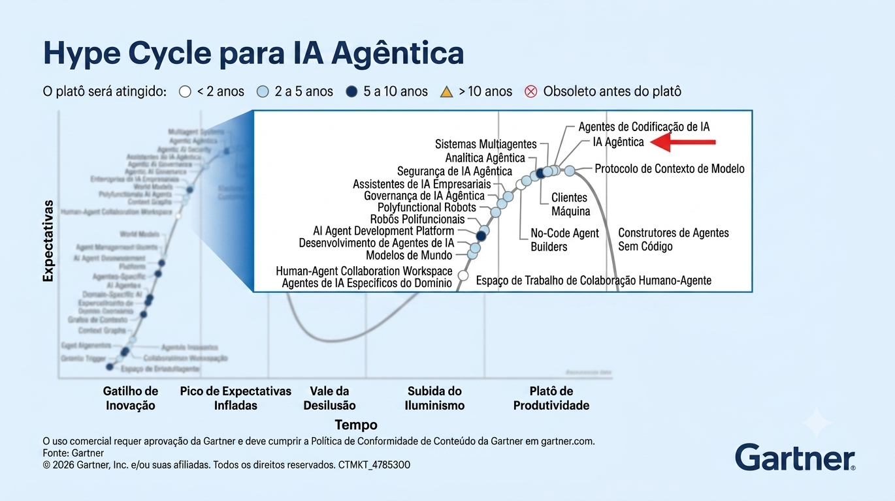

system_prompt = "Você é um classificador rígido de gênero baseado em nomes brasileiros e estrangeiros.
Sua única função é retornar exatamente uma palavra, sem explicações.
Regras obrigatórias:
- Retorne APENAS: Masculino ou Feminino
- SEM pontuação, SEM explicação, SEM espaços extras
- Baseie-se no primeiro nome para classificar
- Em caso de dúvida, use o primeiro nome como referência principal."2.1 Fundamentos Agentes de IA
🤖 O que é um Agente de IA?
Um LLM tradicional funciona de forma simples: recebe uma pergunta e gera uma resposta. Já um agente de IA vai além, que trata-se de um sistema computacional que usa o modelo de linguagem como seu motor de raciocínio, mas acrescenta autonomia, memória operacional e a capacidade de agir e interagir com o ambiente de maneira contínua e iterativa.
Segundo OpenAI (2025), um agente de IA configura-se como um sistema fundamentado em três componentes essenciais: instruções (diretrizes de atuação), guardrails (barreiras de segurança) e ferramentas (capacidades de ação). Tais componentes articulam-se com os componentes estruturantes, como: modelos, estado/memória e orquestração, constituindo inter-relações para esta arquitetura de agente de IA, em detalhes a seguir:
- Modelo (Model): Motor de IA que processa entradas e gera respostas;
- Instruções (Instructions): Diretrizes que definem comportamento e propósito do agente;
- Mecanismos de proteção (Guardrails): Políticas e filtros de segurança para proteger contra uso inadequado;
- Ferramentas (Tools): Funções que permitem ao agente tomar ações e interagir com sistemas;
- Estado/Memória (State/Memory): Sistema para manter histórico de conversa e contexto e
- Orquestração (Orchestration): Lógica que gerencia fluxo, múltiplos passos e coordenação.
Como podemos observar na figura a seguir:

Em nosso contexto de gestão universitária, um Agente difere de um chat comum porque ele:
Consome Pipelines de Dados: Ele pode ler uma tabela inteira linha por linha automaticamente.
Avalia Restrições Institucionais: Aplica critérios específicos da legislação educacional para tomar decisões de classificação.
Entrega Saídas Determinísticas: Quando configurado corretamente, transforma textos vagos ou códigos complexos em categorias padronizadas e limpas, no formato de planilhas ou arquivo csv.
🛠️ Anatomia do Agente de IA através de exemplos práticos para o Escritório de Dados
Para as rotinas práticas documentadas na 4ª Parte deste guia, foram desenhados vários exemplos (laboratórios práticos), dentro deles temos um Agente de IA Classificador Monotarefa, como exemplo de uso e o seu fluxo de funcionamento segue uma arquitetura lógica clara:
1. Parametrização Crítica importante com “Temperatura Zero”
Modelos de IA possuem um parâmetro chamado Temperatura, que varia de 0 a 1 e controla a “criatividade” da resposta. Para tarefas analíticas no Escritório de Dados, a temperatura é configurada estritamente em 0 (zero). Isso garante o determinismo: se o agente processar o mesmo microdado mil vezes, ele entregará exatamente a mesma classificação em todas elas.
2. O Prompt de Sistema do Agente de IA Classificador
Abaixo está o modelo conceitual de instrução utilizado pelo nosso agente para a classificação de cursos:
Persona: “Você é um robô analista de dados especialista no Censo da Educação Superior da UNIFESP.”
Tarefa: “Classifique o nome do curso fornecido em uma das três áreas: STEM, Medicina ou Humanas.”
Exemplos (Few-Shot):
- Entrada:Engenharia Química-> Saída:STEM
- Entrada:Enfermagem-> Saída:Medicina
Regra de Ouro: “Responda APENAS com a categoria. Não use pontuação, não justifique e não adicione texto.”
⚖️ Limitações dos Agentes de IA Locais
Embora poderosos, os agentes baseados em modelos de menor escala (como os modelos de 3B ou 7B parâmetros executados no Ollama) possuem limitações que o gestor público precisa conhecer:
- Janela de Contexto Limitada: Há um limite de informações que o agente consegue “lembrar” por vez. Por isso, a leitura dos microdados deve ser feita em lotes (loops) e não enviando a planilha inteira de uma só vez.
- Sensibilidade à Sintaxe: Pequenas variações na ordem das palavras do prompt podem alterar a acurácia do agente. Daí a importância da metodologia de validação humana que será tratada no próximo capítulo.
- Tempo de Latência: Por operar em uma infraestrutura de processamento local (como um modelo de LLM executado via CPU ou GPU dedicada), cada inferência cognitiva demanda um tempo computacional significativo para gerar tokens de resposta, portanto, esse tempo possa ser mais elevado, uma vez que o tempo total de execução cresce linearmente proporcional à volumetria dos registros das planilhas de dados.
⚙️🤖 Engenharia de Prompts
A utilidade prática de um Modelo de Linguagem (LLM) no ambiente institucional depende diretamente da qualidade e da estrutura das instruções que ele recebe. Este capítulo aborda os fundamentos da Engenharia de Prompts e detalha a transição de modelos estatísticos conversacionais para Agentes de IA autônomos, capazes de executar rotinas complexas de classificação, tratamento e análise de dados institucionais na universidade.
✍️ Engenharia de Prompts: A Linguagem de Programação da IA
Diferente das linguagens tradicionais de programação (como Python ou SQL), onde o desenvolvedor dita regras lógicas exatas, a interação com LLMs ocorre por meio de linguagem natural. A Engenharia de Prompts é a disciplina técnica que estuda como estruturar essas entradas para maximizar a assertividade e a consistência das respostas.
🤖 Estrutura de Papéis (Roles)
Nas arquiteturas modernas de LLMs, o contexto de uma conversa é dividido em três papéis essenciais, fundamentais para a automação de rotinas:
- Prompt de Sistema (System Prompt): Define o comportamento fixo, a persona, as regras de restrição e o formato de saída que a IA deve adotar. É o “DNA” da tarefa. A seguir, exemplo que deve ocorrer uma vez, no início do código:
- Prompt de Usuário (User Prompt): Contém os dados variáveis que serão processados (por exemplo, a linha do Microdado do Censo a ser analisada). A seguir, exemplo de direta enviada a cada chamada:
prompt <- paste0(
"Com base no nome completo'", nome_aluno,
"', identifique o gênero e responda apenas uma única palavra: 'Masculino' ou 'Feminino'."
)- Prompt do Assistente (Assistant Prompt): É a resposta gerada pela IA, que deve seguir estritamente as regras do Sistema. A seguir, no exemplo somente demonstra a saída do modelo, que não é definida manualmente:
# Exemplo da resposta de saída que o modelo retornaria ao usuário
"Masculino"
# ou
"Feminino"
🧠 Assunto Teórica: Engenharia de Prompts vs. Engenharia de Contexto
Embora frequentemente confundidas, a Engenharia de Prompts e a Engenharia de Contexto atuam em camadas distintas e complementares na construção de sistemas baseados em inteligência artificial generativa.
Engenharia de Prompts (A Camada Estática/Linguística): Na prática concentra-se na técnica de redigir a instrução para IA. É o design textual do comando, a escolha dos verbos, a definição do tom de voz e a estruturação de exemplos (few-shot prompting) para guiar o comportamento imediato do modelo de linguagem (LLM). É, essencialmente, como falar com a IA, é a camada linguística de instrução (Sahoo et al. (2024)).
Engenharia de Contexto (A Camada Dinâmica/Arquitetural): Na prática de desenvolvimento, ela consiste no design e na construção de sistemas dinâmicos de software que orquestram o fluxo da informação. É a engenharia responsável por consultar bancos de dados vetoriais (RAG), injetar microdados em tempo real, gerenciar o histórico de memória, atualização do contexto e fornecer as ferramentas (tools e APIs) no formato exato e no momento correto, indo muito além do texto do prompt (Mei et al. (2025)).
Em resumo: Enquanto a Engenharia de Prompts dita a diretriz de como o agente deve agir, a Engenharia de Contexto constrói o ecossistema automatizado que garante que a IA tenha os insumos estruturados necessários para realizar a tarefa de forma plausível, segura e governável.
🎯 Estratégias para reduzir alucinação pelo prompt
Conforme IBM Think (2025), a alucinação é quando um sistema de inteligência artificial gera uma resposta convincente e gramaticalmente correta, mas que é factualmente falsa, inventada ou sem sentido. Isso acontece porque a IA prevê palavras baseadas em padrões estatísticos, não em conhecimento factual. Algumas das estratégias podem ajudar:
- Prompts vagos geram respostas vagas e mais propensas a invenções;
- Instruir explicitamente a IA a não inventar;
- Ajuda a direcionar comportamento mais rigoroso;
- Restringir formato de saída e
- Quanto mais simples ou genérico for o prompt, maior a chance da LLM inventar informações incorretas ou imprecisas (alucinação).
# Exemplo de prompt seguindo estas estratégias
system_prompt = "Você é um pesquisador acadêmico especializado em análise estatística, métodos quantitativos e interpretação científica de dados.
Responda exclusivamente com precisão técnica, linguagem formal e fundamentação lógica.
Regras obrigatórias:
1. Não invente informações, referências, resultados ou dados.
2. Caso não possua evidência suficiente para responder, informe explicitamente:
'Não há informações suficientes para uma resposta confiável para sua questão.'
3. Não faça suposições implícitas.
4. Utilize apenas as informações fornecidas no contexto da pergunta.
Formato obrigatório da resposta:
- Objetivo
- Fundamentação
- Análise
- Conclusão
Mantenha respostas concisas, técnicas e verificáveis."
Notas Gerais sobre Engenharia de Prompts
Como apontado por Sahoo et al. (2024), a engenharia de prompts emergiu como uma técnica indispensável para ampliar as capacidades de grandes modelos de linguagem (LLMs) e modelos de visão-linguagem (VLMs). Essa abordagem utiliza instruções específicas da tarefa, conhecidas como prompts, para aprimorar a eficácia do modelo sem modificar seus parâmetros principais.
⚙️ Ciclo de Hype de Tecnologias Emergentes para Agentes de IA
Os Ciclos do Hype, conforme Gartner (2026) são uma representação gráfica da maturidade, da adoção e da aplicação comercial de uma tecnologia emergente específica de acordo com o ciclo de vida, tais ciclos mostram-se fundamentais para a análise de tendências em tecnologias emergentes, ques auxiliam os gestores ou usuário de escritórios de dados a identificar onde o progresso é efetivo, em quais pontos as expectativas excedem a maturidade atual e de que forma agentes de IA transformará a inovação do escritório de dados no futuro. Na figura 1, na análise percebe-se que o platô de maturidade para agentes de IA pode ser alcançado em 2 a 5 anos, isto é bastante otimista para que o guia ainda torna relevante para o Escritório de Dados nos próximos anos.

Transição para a Governança e Segurança
Validada a metodologia matemática e o fluxo de auditoria das respostas, surge a próxima pergunta crítica para a administração pública: como proteger o sigilo dessas bases? No próximo capítulo, discutiremos a Segurança da Informação, LGPD e as vantagens técnicas da Infraestrutura Local.
🤖🛡️Segurança, LGPD e Governança com IA Local
A modernização tecnológica da administração pública deve caminhar em estrita conformidade com o ordenamento jurídico vigente. No tratamento de dados institucionais pelo Escritório de Dados (EDADOS) da UNIFESP, a observância à Lei Geral de Proteção de Dados Pessoais (LGPD) é mandatória. Este capítulo analisa os riscos de vazamento de informações em arquiteturas de nuvem tradicionais e justifica, sob a ótica da segurança da informação e da soberania de dados, a adoção de Modelos de Linguagem de grande escala (LLMs) executados de forma estritamente local.
⚖️ O Desafio da LGPD no Contexto Universitário
O Escritório de Dados da universidade manipulam diariamente bases contendo dados pessoais, dados acadêmicos e informações institucionais sensíveis. O processamento dessas matrizes exige conformidade com os princípios da Lei nº 13.709/2018 (LGPD) (Brasil 2018), especialmente:
- Princípio da Finalidade e Necessidade: O uso de ferramentas automatizadas deve se limitar ao estrito cumprimento das atribuições legais do departamento.
- Princípio da Segurança: Adoção de medidas técnicas aptas a proteger os dados pessoais de acessos não autorizados e de situações acidentais ou ilícitas de destruição, perda ou alteração.
O Risco das APIs Comerciais em Nuvem (SaaS)
O envio de microdados ou planilhas institucionais para APIs de grandes corporações (como OpenAI, Google ou Anthropic) apresenta óbices intransponíveis para a governança do setor público:
Vazamento de Dados por Terceiros: Ao trafegar dados de alunos ou servidores para servidores externos, a universidade perde o controle sobre o ciclo de vida da informação;
Uso de Dados para Treinamento: A maioria dos serviços em nuvem utiliza, por padrão, os textos enviados nos prompts para treinar seus futuros modelos comerciais, o que viola o sigilo de dados públicos e institucionais não anonimizados e
Dependência Tecnológica e Financeira: A submissão a contratos internacionais indexados em moeda estrangeira expõe a instituição a riscos orçamentários e a sanções inesperadas de privacidade.
🛡️ A Solução: Arquitetura local e o Ecossistema Ollama
Para mitigar integralmente os riscos associados à nuvem, este guia técnico propõe e documenta uma arquitetura de execução estritamente local (on-premise), utilizando o framework Ollama (Continue Dev, Inc. (2026)).
A execução local do modelo de IA (como o Qwen2.5:3b ou Llama3) dentro da infraestrutura de hardware ou nas estações de trabalho do Escritório de Dados oferece três salvaguardas críticas:
Inexistência de Tráfego Externo: O fluxo de dados ocorre por meio de requisições de loopback local (
http://localhost:11434), Ollama utiliza nativamente a porta TCP 11434. Nenhum byte de informação sigilosa atravessa a rede externa da internet;Soberania e Controle de Logs: Como o ecossistema é instalado localmente, o escritório de dados poderá reter o controle absoluto sobre os logs de acesso e auditoria. É possível saber exatamente qual máquina disparou o script, em qual horário e qual volume de dados foi tratado, atendendo aos requisitos de auditoria, que pode ser resolvido com o desenvolvimento de um agente específico para registrar logs e
Conformidade Regulatória Nativa: Dado que os dados permanecem confinados ao ambiente controlado da universidade, elimina-se a necessidade de firmar aditivos complexos de proteção de dados com fornecedores internacionais, simplificando o processo de homologação junto ao Comitê de Ética em Pesquisa (CEP) da Unifesp.
Conexão com o Próximo Capítulo
Com toda a base teórica estabelecida, contemplando os aspectos conceituais e de segurança, encerramos a fundamentação do guia. A partir do próximos capítulos, entramos na 3ª Parte: Etapas para construção dos agentes de IA e 4ª Parte: Laboratórios Práticos (Soluções) de uso de agentes de IA, na qual serão apresentadas as configurações necessárias para a execução dos agentes de IA e a operacionalização deste ecossistema em ambiente real.